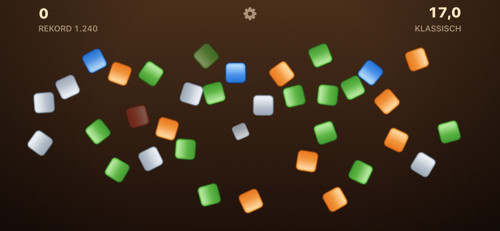
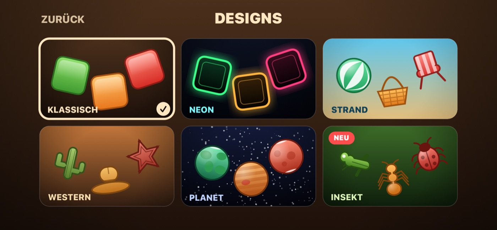
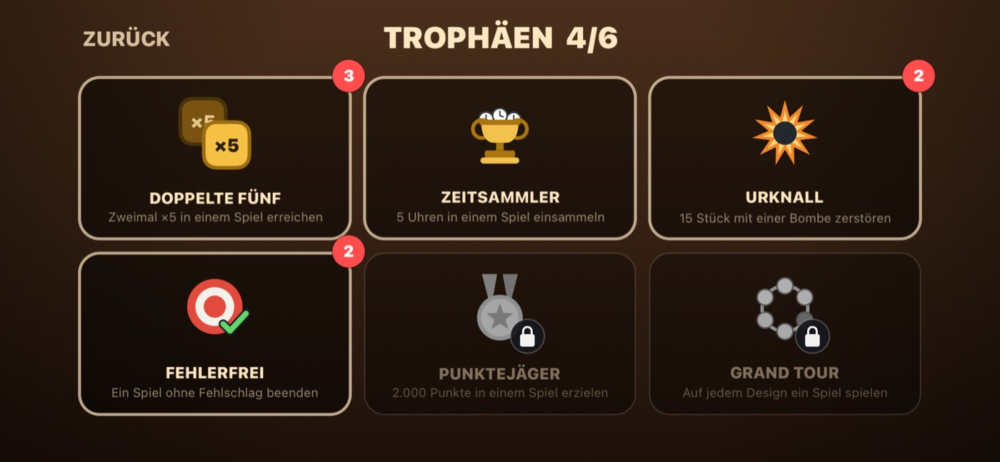

Spielanleitung
Alles, was das Spiel tut, auf einer Seite.
Der Durchgang
Ein Durchgang dauert dreiunddreißig Sekunden. Objekte kommen von überall ins Bild. Tippen Sie darauf, um sie zu zerschlagen.

Die Regel, auf die es ankommt
Treffer in Folge bauen einen Multiplikator auf: fünf in Folge bringen ×2, zwölf ×3, fünfundzwanzig ×4 und fünfzig ×5.
Ein Fehlschlag wirft Sie sofort auf ×1 zurück. Ein Fehlschlag ist jeder Tipp, der nichts trifft. Deshalb ist schneller tippen nicht automatisch besser — die Ziele sind bewusst klein, und bezahlt wird Genauigkeit.
Was was wert ist
| Objekt | Punkte |
|---|---|
| Grün | 25 |
| Grau | 25 |
| Orange | 50 |
| Blau | 100 |
| Rot | 150 |
Uhren und Bomben
Eine Uhr gibt acht Sekunden dazu. Eine Bombe räumt alles in ihrer Nähe weg — für ein volles Bild aufgehoben, ist sie der größte einzelne Punktezug im Spiel.
Designs
Sechs Stück, über DESIGNS auf dem Startbildschirm wählbar: Klassisch, Neon, Strand, Western, Planet und Insekt. Jedes hat eigene Objekte, Farben und Klänge. Ein Design, das Sie noch nicht angesehen haben, trägt ein NEU-Abzeichen.

Trophäen
Sechs, und alle bis auf eine lassen sich immer wieder verdienen — die Vitrine zählt mit.
- Doppelte Fünf — Zweimal ×5 in einem Spiel erreichen
- Zeitsammler — Fünf Uhren in einem Spiel einsammeln
- Urknall — Fünfzehn Objekte mit einer Bombe zerstören
- Fehlerfrei — Ein Spiel ohne einen einzigen Fehlschlag beenden
- Punktejäger — 2.000 Punkte in einem Spiel erzielen
- Grand Tour — Auf jedem Design ein Spiel spielen

Zwischen Ihren Geräten
Bestwert und Trophäen gleichen sich per iCloud ab — eine auf dem iPad verdiente Trophäe erscheint auch auf dem iPhone.
Ein paar Dinge, die helfen
- Lassen Sie erst eine Menge entstehen, bevor Sie Ketten bauen — Fehlschläge sind billig, solange das Bild leer ist, und teuer, sobald es das nicht mehr ist.
- Eine Bombe im vollen Bild schlägt jede einzelne Kiste, und zwar deutlich.
- Wird die Uhr rot, bleiben fünf Sekunden. Dann ist eine Uhr mehr wert als eine rote Kiste.